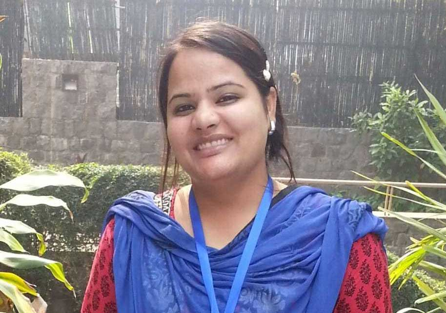

زریں زخم
Za’reen Zakham
Sahitya Akademi Yuva Puraskar, 2018
Kashmiri · Short Stories · Dheeba Nazir
A literary portrait · Srinagar
She writes in a language that must be spoken to survive. Her stories keep Kashmiri close to the mouth, the classroom, and the page.
دھیبہ نذیرکٲشُر ادب

A life assembled around Kashmiri: first as a subject chosen, then as a language taught, then as a literature written.
Dheeba Nazir was born in 1988 in Srinagar. She comes from a middle-class family of Eidgah, in the old city, and later settled in Nowshera. The geography is not scenery. It is the first language of her work: neighbourhood, household, classroom, the ordinary rooms in which Kashmiri either continues or thins out.
She began writing while still at school. Her father encouraged the habit. After secondary education she chose Kashmiri for her graduation — not as heritage display, but as a discipline. During those years she studied under the poet Naseem Shafaie, later a Sahitya Akademi awardee, whose presence she has named as a decisive influence.
She holds postgraduate qualifications in Kashmiri literature, Urdu literature, and education. The three sit together with unusual exactness. One is the language she writes. One is the language she has carried texts across. One is the profession through which a language reaches children before they decide it is optional.
Before the prize, there was already a practice: an early essay on Ropi Bhawani; translations that moved books from Urdu into Kashmiri; membership in literary circles in the Valley, among them Kalamkar Smith and the Dara Shikoh Centre for Art and Literature. Then came a first collection of her own stories, and with it a public name.
A first book of stories, written in Kashmiri, recognized as literature before it was recognized as news.
زریں زخم
Sahitya Akademi Yuva Puraskar, 2018
Kashmiri · Short Stories · Dheeba Nazir
The title has travelled in more than one transliteration — Za’reen Zakham in the Akademi’s list, Zareen Zakham in the Valley press, Zareen Zakhm in The Tribune — and in more than one English rendering: sparkling wounds, glistening wounds. The wound stays. So does the shine. The collection is a book of fifteen short stories, her first of her own fiction after the earlier work of translation.
Sahitya Akademi announced the Yuva Puraskar on 22 June 2018. Among the year’s young writers, Dheeba Nazir was named for Kashmiri in the short-story category. DPS Srinagar, where she taught Kashmiri, noted that she was the first girl from Srinagar to receive the honour. The award is not the book. It is the state’s formal admission that the book exists in the national record of a language.
What the stories do, according to those who have written about them, is stay close to Kashmiri life without ornamental diction. Characters are local. Situations are observed, then turned until they become narrative. The collection is less a tour of Kashmir than a set of rooms in which people speak, fail to speak, and go on living.
Greater Kashmir describes one story as turning on Deeda and her foster brother — a Kashmiri Pandit she has not seen since they were born in Srinagar’s Lal Ded maternity hospital in 1988. The plot is not excerpted here. The fact of it is enough: a search that begins in the same year as the author’s birth, and in the same city.
Before she published her own stories, she moved other people’s books into Kashmiri.
In interviews given in 2018 she described the direction clearly: three books translated from Urdu into Kashmiri. The work is a bridge with a stated traffic. Kashmiri is the destination. Urdu is the storehouse being opened for a readership that might otherwise meet these texts only in another tongue.
گل بکاولی داستان
Urdu → Kashmiri
کلیات عبدالاحد آزاد
Urdu → Kashmiri
کلیات روپی بھوانی
Urdu → Kashmiri
A fourth body of work — Kashmiri proverbs and idioms — is mentioned in later literary notes about her. Publication details are not confirmed in the 2018 record, so it is left here as a reported line of attention rather than a dated edition.
Her first article was on Ropi Bhawani. The research did not remain a student exercise. It became a through-line.
c. 1621 — c. 1721
A Kashmiri mystic poet of the seventeenth century, also remembered as Mata Rupa Bhawani. She wrote in the spiritual register of the Valley’s older literature — a woman’s voice trained in devotion, solitude, and verse. For a contemporary Kashmiri writer, she is not a museum figure. She is proof that the language has already held a woman’s interior life for centuries.
Present
She has said she wrote her first article on Ropi Bhawani, later translated the collected works into Kashmiri, and was engaged in research on the poet at the time of the Yuva Puraskar. The Tribune records that she remains “deeply inspired” by her. The companionship is structural: a living writer keeping an older Kashmiri woman on the working desk, not in the preface.
The prize interview did not linger on the plaque. It turned toward speech.
Speaking to The Tribune in July 2018, after the Akademi announcement and before the formal conferment, Dheeba Nazir asked the Valley’s young people to use Kashmiri. The sentence is short enough to be mistaken for a slogan. It is not. It is a writer’s diagnosis: a literature cannot outrun the mouths that refuse it.
“Try to speak your own mother tongue — Kashmiri. We (youth) have to revive our language.”
Dheeba Nazir, to The Tribune, 17 July 2018
“Dear young people do not bury your talent… the gift that the God has given to you… do not be afraid to dream of great things.”
Dheeba Nazir, message recorded by The Tribune, 2018
At Delhi Public School, Srinagar, the language is not only published. It is assigned, corrected, spoken aloud.
The school’s 2018 notice is unusually precise. Deeba Nazir — the spelling the campus used — is identified as a young writer and as a teacher of Kashmiri. The two roles are not sequential. A writer who teaches her language is doing the same work at two tempos: the slow tempo of a book, the daily tempo of a period bell.
If Kashmiri is to remain a literature, it must first remain a subject a child is willing to take. That is the unglamorous half of advocacy. It happens in a classroom, with grammar and recitation, long before it happens in an award citation.
Recognition, stated with the caution the sources deserve.
Verified · 2018
Kashmiri. Short stories. Za’reen Zakham. Announced 22 June 2018 among twenty-one young writers. The official Akademi list is the authority for the title, language, genre, year, and name.
A portrait should show its paper trail.